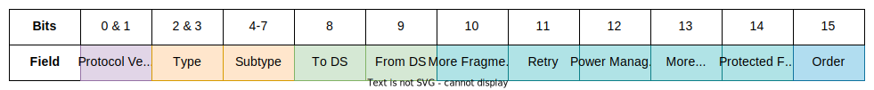

Introduction
The IEEE 802.11 standard defines the structure of datalink frames in wireless networks. These frames have a more complicated structure than Ethernet ones.

The existence of the last 6 fields in the MAC header is contingent on the type of the frame.
Frame Control
The Frame Control is a 2-byte field, subdivided into 11 subfields, which carries information about the WiFi frame, including its type.

The Protocol Version is 2 bits long and is set to 00 for PV0 (WLAN) or to 01 for PV1 (802.11ah). The revision level is incremented only when there is a fundamental incompatibility between two versions of the standard.
The Type is a 2-bit field which indicates the type of the frame. There are three main times of frames in 802.11 and the values corresponding to each type are the following:
| Value | Type |
|---|---|
00 | Management |
01 | Control |
10 | Data |
11 | Extension |
Each frame type has its own subtypes and the particular one for the frame is specified in the 4-bit Subtype field.
Following are the To Distribution System (ToDS) and the From Distribution System (FromDS) 1-bit fields. They indicate whether traffic is travelling from or to the Distribution System. However, it is really the combination of these bits that is interpreted as meaningful:
| To DS | From DS | Meaning |
|---|---|---|
| 0 | 0 | Station-to-station communication in an IBSS. |
| 0 | 1 | Traffic from AP to station (exiting the DS). |
| 1 | 0 | Traffic from station to AP (entering the DS). |
| 1 | 1 | Traffic from AP to AP (wireless bridging). |
Next is the More Fragments field. If a datagram was fragmented into multiple frames, this field will be set to 1 for all frames except the last one.
Afterwards comes the Retry field. A value of 1 indicates that this frame is a retransmission of a frame which did not receive a confirmation (ACK).
The Power Management field is set to 1 if the station uses power saving mode, which means that periodically shuts down some of its components to preserve power. Frames with this bit set but no actual data are used to inform the AP of the station's power saving mode. The AP will then buffer frames intended for this client.
The More Data field indicates whether or not the AP has more buffered frames to send to a station in power saving mode. Receiving a frame with this bit set to 1 which cause the station to wait to receive all frames from the AP before proceeding with its power saving shenanigans.
The Protected Frame bit is set to 1 when the payload of the frame is encrypted and is 0 otherwise.
Finally, the Order bit should be set to 0 for all frames with the exception of non-QoS data frames. In this case, this bit is set to 1 if a request from a higher layer for the data to be sent using a strictly ordered Class of Service. This tells the receiving station to process the frames in order.
Duration / ID
The Duration / ID is interpreted differently depending on the message type and can either serve as the time (in microseconds, μs) the channel will be dedicated for the transmission of the frame, or an association ID. The latter is only the case in PS-Poll in Legacy Power Management.
When a station receives a frame from another station, it looks at the Duration and sets an internal timer based on it (called a NAV). The station knows that the channel will be busy until the timer reaches 0. Note that the frame's receiver does not update their NAV and the NAV is set to 0 for the frame's sender.
The duration value always refers to the time that will be spent for both the transmission of the frame and its acknowledgment. Thus, the transmitter of the frame will also need to calculate the time it will take to receive an ACK frame. This ACK will have a duration of 0, since the duration field in the original frame already accounts for its transmission time.
The duration for any frame sent during the contention-free period in a PCF is set to 0x8000.
Address 1, 2, 3 & 4
There can be between 1 and 4 MAC addresses in a 802.11 frame. Which addresses are present and their order depend on the message type. An address can be one of the following:
- Destination Address (DA) - the ultimate destination of the frame
- Source Address (SA) - the original sender of the frame
- Receiver Address (RA) - the immediate receiver of the frame
- Transmitter Address (TA) - the immediate sender of the frame
Sequence Control
This 16-bit field is further separated into two fields. The first 4 bits are called the fragment number and the other 12 are called the sequence number. Each frame sent by a particular station must have a different sequence number from rest of the frames sent by this station. When a frame is too large and gets fragmented, the fragment number begins at 0 and is incremented for every fragment.
QoS Control
This 16-bit field is used for Quality of Service control and is only present in data frames of type QoS-data. It is further subdivided into 5 subfields.

The first 4 bits are the Traffic Indicator (TID) and it identifies the User Priority (UP) which map to their 802.1Q equivalents. Furthermore, the User Priorities are categorised into 4 QoS Access Categories (AC). 802.11 uses the Enhanced Distributed Channel Access (EDCA) model where each Access Category is mapped to a different queue.
| User Priority (UP) Value | 802.1Q CoS Class | Access Category (AC) | Designation |
|---|---|---|---|
| 1 | BK | AC_BK | Background |
| 2 | - | AC_BK | Background |
| 0 | BE | AC_BE | Best Effort |
| 3 | BE | AC_BE | Best Effort |
| 4 | CL | AC_VI | Video |
| 5 | VI | AC_VI | Video |
| 6 | VO | AC_VO | Voice |
| 7 | NC | AC_VO | Voice |
The actual priority level increases from top to bottom.
| Access Category (AC) | Description |
|---|---|
| Voice | The highest priority. It allows for multiple concurrent VoIP calls with low latency and good voice quality. |
| Video | Supports prioritised video traffic. |
| Best Effort | For traffic from devices which cannot provide QoS capabilities and isn't as sensitive to latency but is affected by big delays, such as Web Browsing. |
| Background | Low-priority traffic with no strict throughput or latency requirements such as file transfers. |
The End of Service Period (EOSP) field is 1 bit in length. When set to 1, it indicates that a client in power saving mode may go to sleep.
The next two bits indicate the Acknowledgement Policy (ACK Policy) and have four possible variants - ACK, No ACK, No Explicit ACK, and Block ACK.
The next bit is reserved for future use.
Bits 8-15 are used to indicate 4 things:
TXOP Limit- this is the transmission operation limit provided by the AP.AP PS Buffer Size- the AP uses this to indicate the PS buffer state for a given client.TXOP Duration Requested- the transmission operation duration desired by the client for its next transmission. The AP may grant less.Queue Size- used by the client to inform the AP of how much buffered traffic it has to send. The AP can use this information to calculate the time necessary for the next transmission to this client.
HT Control
This field was introduced in the 802.11n standard and enable high-throughput operations.
Frame Check Sequence (FCS)
Similarly to Ethernet, this field is used to verify the integrity of the rest of the frame.